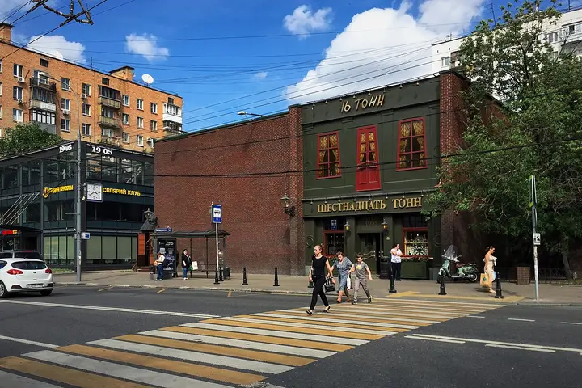

Подборку собрали 19 октября, прошедшие события скрыты. Свежая афиша — на главной

Фото: Gennady Grachev from Moscow, Russia, CC BY 2.0 · Wikimedia Commons
Паб и концертный клуб · ЦАО
16 Тонн
Паб со своим пивом и отдельным концертным залом у «Улицы 1905 года». Живые концерты, работает до 6 утра — проверенный вариант для вечера с друзьями.
- ₽₽ · 1 500–3 000 ₽ на человека
- Новое в каталоге
- 1 событие в афише
Позвать сюда: 16 ТоннОткрыть в каталоге: 16 ТоннМаршрут до места: 16 Тонн
Адрес и детали
- Адрес
- ул. Пресненский Вал, 6, стр. 1
Открыть на Яндекс Картах (в новой вкладке) - Метро
- м. Улица 1905 года
- Округ
- Центр (ЦАО)
- Цена
- 1 500–3 000 ₽ на человека
- Проверено
- работает — проверили в октябре 2026
Афиша площадки 1
16 Тонн · м. Улица 1905 года · 2 500–7 000 ₽ · 16+
Сибирский рок Дмитрия Ревякина в клубном зале «16 Тонн»: живой звук, сцена в паре метров и бар под рукой.
Подробнее: Калинов МостПозвать сюда: Калинов МостБилеты : Калинов Мост (страница с билетами, откроется в новой вкладке)
Фото: Gennady Grachev from Moscow, Russia, CC BY 2.0 · Wikimedia Commons

Входит в подборки
Похожие рядом
Что ещё рядом


Как позвать
- Выбери план, место или событие — в карточке адрес, цены и маршрут в Яндекс Картах.
- Нажми «Позвать сюда» — соберётся приглашение-игра для свидания или голосование для компании.
- Отправь ссылку в любой мессенджер: тебе ответят, а компания отметит, куда и когда может. Бесплатно и без регистрации.